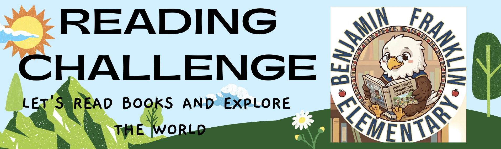

Reading Challenge Monthly Program

The Franklin Reading Challenge is a FREE monthly reading program sponsored by the Ben Franklin PTA that encourages elementary students to explore books across a variety of genres from September through March. During the 2026–2027 school year, students will have the opportunity to participate in seven monthly reading challenges. This program is open to ALL Ben Franklin Elementary students. No registration is necessary!
Important: Participants may choose to submit their work online or turn it in at the library. Late submissions will not be accepted, so be sure to submit your child's completed challenge by the deadline.
Join the Reading Challenge Email List
Stay up to date on Reading Challenge details: 2026–2027 Franklin Reading Challenge Mailing List Sign-Up
Prizes
Prizes will be awarded to students who complete at least 4 reading challenges BEFORE each deadline! Thanks to our PTA, we're able to offer two levels of rewards for student participation:
- Complete ANY 4 challenges (RC 1–RC 7) — earn a small prize
- Complete ALL 7 challenges — earn a certificate and either a special prize or a reading celebration party (TBD based on participation and budget)
Parents are also encouraged to reward their kids at home, as our prize budget may be limited with high participation.
Reading Challenge Schedule (all due dates 11:59 PM)
| Challenge | Reading Topic | Available | Due Date |
|---|---|---|---|
| RC 1 | Realistic Fiction | 9/1/2026 | Fri, 10/2/2026 |
| RC 2 | Mystery or Scary Fiction | 10/1/2026 | Fri, 11/6/2026 |
| RC 3 | Biography & Autobiography | 11/1/2026 | Fri, 12/4/2026 |
| RC 4 | Non-Fiction | 12/1/2026 | Fri, 1/8/2027 |
| RC 5 | Fantasy Fiction | 1/1/2027 | Fri, 2/5/2027 |
| RC 6 | Science Fiction | 2/1/2027 | Fri, 3/5/2027 |
| RC 7 | Historical Fiction | 3/1/2027 | Fri, 4/2/2027 |
Questions?
Chairpersons: Sabrina & Jayshree — readingchallenge@mybenfranklinpta.org